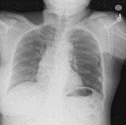
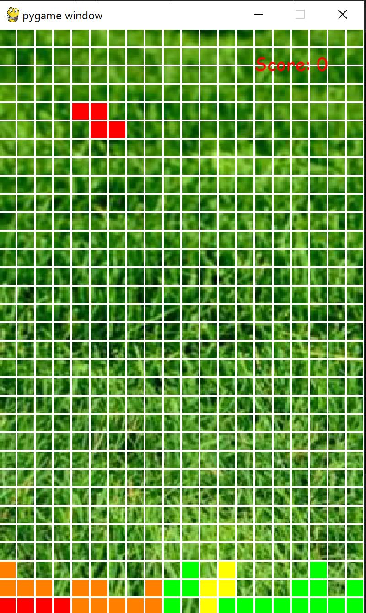

Keaton Rowley
Articles
About Me
Contact Me
Demos
Condensa
A study of the Condensa compression tool with custom created neural networks working with the Cinchona malaraial cell data set, and ChestXRay data set. Analyzes different performance metrics between network types along metrics such as network latency, accuracy, and network size.
Skills: Python, Linear Algebra

Tetris
Tetris implemented in Python utilizing matrice rotation math to calculate grid changes.
Skills: Python, Linear Algebra
